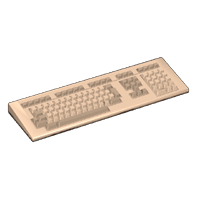
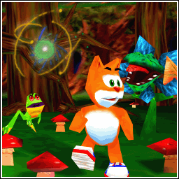
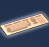

Muis en toetsenbord
| Naam | Score | Griezelplek |
|---|
Avontuur

Bezig met het laden van Het Bos

Muis en toetsenbordController: sluit een controller aan en druk op een knop.
Controller: A / × bevestigt, B / ○ gaat terug. Kies met de linkerstick of richtingsknoppen; links/rechts wijzigt instellingen. Scroll lange menu’s met de rechterstick. In een browser is soms eerst een klik of tik nodig voor geluid en volledig scherm.
Vul je spiegelstukken en toverdrank tot het maximum en ontvang 9000 extra punten.
Ontgrendel direct alle vijf levels in het hoofdmenu. Dit wordt meteen bewaard.
Uitschakelen in een muur of buiten het level brengt je terug naar een veilige plek.
Aanraakbediening: beweeg met de stick links en veeg rechts om rond te kijken. Spring en Schieten werken zolang je ze aanraakt. Houd Overslaan twee seconden vast tijdens een tussenfilmpje. Lopen schakelt rustig lopen in of uit; Camera wisselt de weergave. Menu opent pauze, instellingen en cheats. Bij vrij vliegen zijn Omhoog en Omlaag beschikbaar.
Sluit een controller aan en druk op een knop. Gebruik de linkerstick om te bewegen en de rechterstick om rond te kijken. De kijkgevoeligheid is instelbaar.
Bij vrij vliegen stijg je met A / ×. Opslaan, laden en cheats staan in het pauzemenu. Als de gebruikte controller losraakt, pauzeert het spel. Knopnamen volgen de standaard Xbox- of PlayStation-indeling; op andere controllers tellen de posities.
Je avontuur wordt elke minuut automatisch opgeslagen. Je kunt ook zelf opslaan met F5. Zit je vast? Kies in het menu Eerder opgeslagen avontuur laden om ongeveer 2, 5 of 10 minuten speeltijd terug te gaan.
Verzamel schatten, toverdrank en spiegelstukken. Klik in het spel om met de muis rond te kijken.